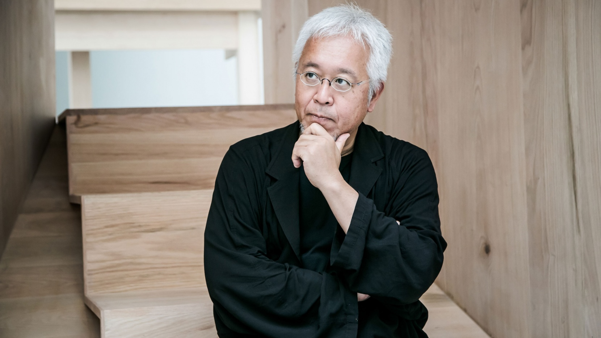
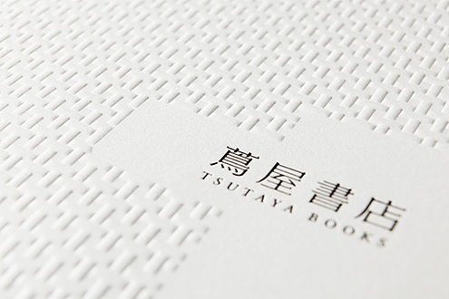
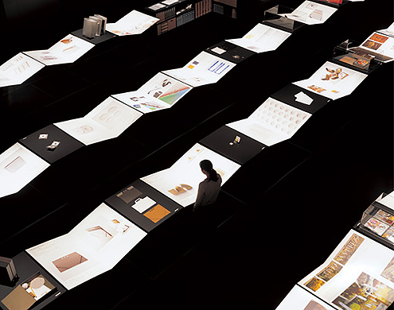
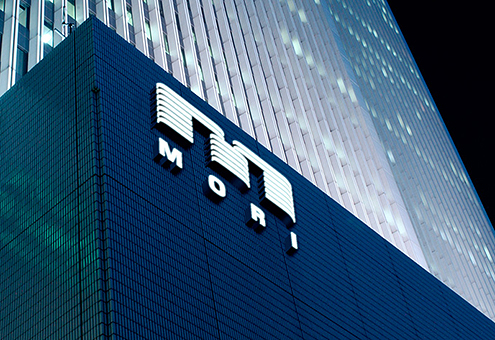

Kenya Hara (Okayama, 1958) is a leading international designer, best known for the art direction of MUJI, begun in 2001, through which he has brilliantly defined the company’s no brand identity. His design searches the spiritual sphere rather than the material one, exploring the experience of emptiness.

“White exists on the periphery of life. Bleached bones connect us to death, but the white of milk and eggs, for example, speaks to us of life.”
DESIGN WORKS

Muji, 2010, bags (AD Kenya Hara, PH Takashi Sekiguchi).

Tsutaya Books, 2011, ad.

Takeo Paper Show, 2010, exhibition.

Mori Building, 2011, light signage.
INTERVIEW: Q'S & A'S
1. What did you want to do when you were growing up?
2. Which was your favourite game?
3. What was your favorite subject at school?
4. A project you would like to realize.
5. A Designer that you admire.
6. A typeface.
7. As a profane, I consider ideograms more illustrative and latin letters more symbolic. Ideograms seem more versatile, for example you can set them both vertically or horizontally without comprosimsing legibility. Probably because ecah ideogram seems to be independent from the others.
8. A piece of design (or just an object)
9. A piece of architecture.
10. I read you believe that the value of design is to enhance a spiritual awakening. Why and how design can enhance spirituality? Is this idea related to Japanese culture?
11. In the Japanese aesthetics there is often a coexistence of tradition and innovation. The traditional component seems to be related to sobriety and nature. Can you apply this to your design?
12. I always like Takeo’s paper boy. Why does a Japanese paper manufacturing company – founded in 1899 – have a mark reproducing a xilography from a German book published in 1568?
13. A definition of good design.
14. How would you describe your designs?
1. “I didn’t have any image of becoming an adult.“
2. “I rember getting excited about measuring things and drawing graphs, things like changes in the weather or sunrises and sunsets.“
3. “Arts & Crafts and Japanese.“
4. “I developed a plan that I want to realize for a resort hotel on a very large site.“
5. “(He is rather an artist, but) Isamu Noguchi.“
6. “Garamond and Univers. And for Japanese, I’m currently designing my own.“
7. “In my opinion it seems that ideograms are used like constellations, whereas other alphabets are used like patterns.“
8. “Isamu Noguchi’s sculptures and playground models.“
9. “Peter Zumthor’s chapel in the Swiss village of Sumvitg and the Dojinsai, which was shogun Ashikaga Yoshimasa’s studio at Jishō-ji Temple (Ginkakuji) in Tokyo.“
10. “Pride is important to me and since design is an accumulation of tradition and wisdom I am pride to share all of this through my work.“
11. “Probably, without my noticing, tradition is embedded in the very foundation of my sensory perception. Tradition is something that we want both to avoid and to protect, even as we rebel against it.“
12. “Takeo is a specialized paper trading company focusing on Western-paper, rather than Japanese paper. A former member of the board, Mr. Hiraku Kido, found the illustration at the British Museum, in the Panoplia Omnium Liberalium Mechanicarum et Sedentariarum Artium Genera Contines by Jost Amman. And he decided to use the paper boy as an icon of Takeo. I would like to make this point clear: I am not the designer nor the proposer of that icon. What I did was to make it as a signature by brushing up the illustration and combining it together with the company logotype.“
13. “Good design has the power to rouse people, not as an answer but as a question.“
14. “Something in the process of becoming. A subject I keep thinking about. A thought I continue to hold on to.“